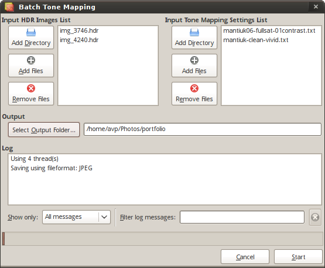

This window lets you tonemap a batch of M HDR images using N tonemapping settings files. After the process you'll get M*N LDR images.
The top-left list contains the input hdrs, the top-right list contains the input tonemapping settings files.
You have to specify an output directory where the output LDR images will be saved to.
You can also always see what's happening in the Log panel at the bottom. You can filter the visualization of the log messages using the drop-down menu on the bottom-left and the text-field at the bottom-right of the window.
